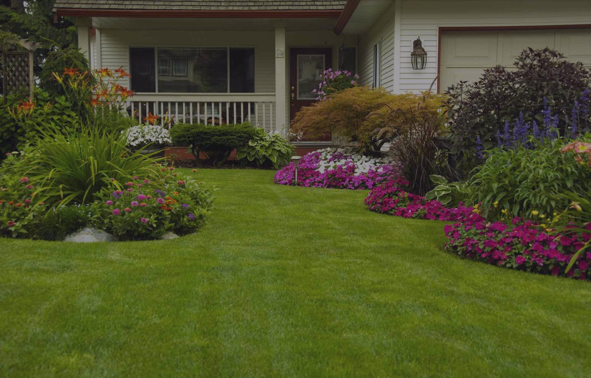

Garden Installation & Restoration
Simple or detailed, blank slate or tired yard: Peter works with you through every step to personalize the garden of your dreams.
Landscape design
Garden services
Tree & hedge services
From design to installation, turn-key garden construction to make tired grass luscious and green, fill your space with fragrant flowers and get the most out of summer.